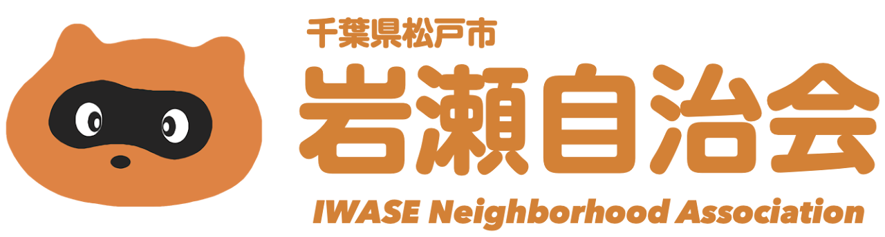
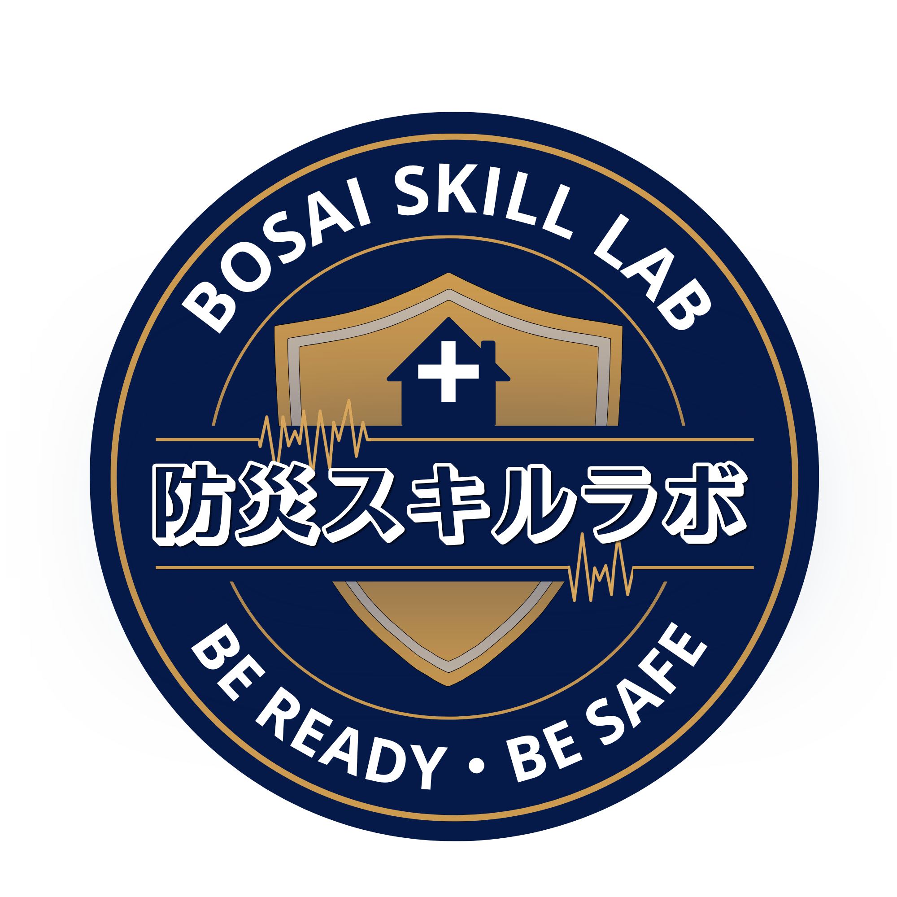
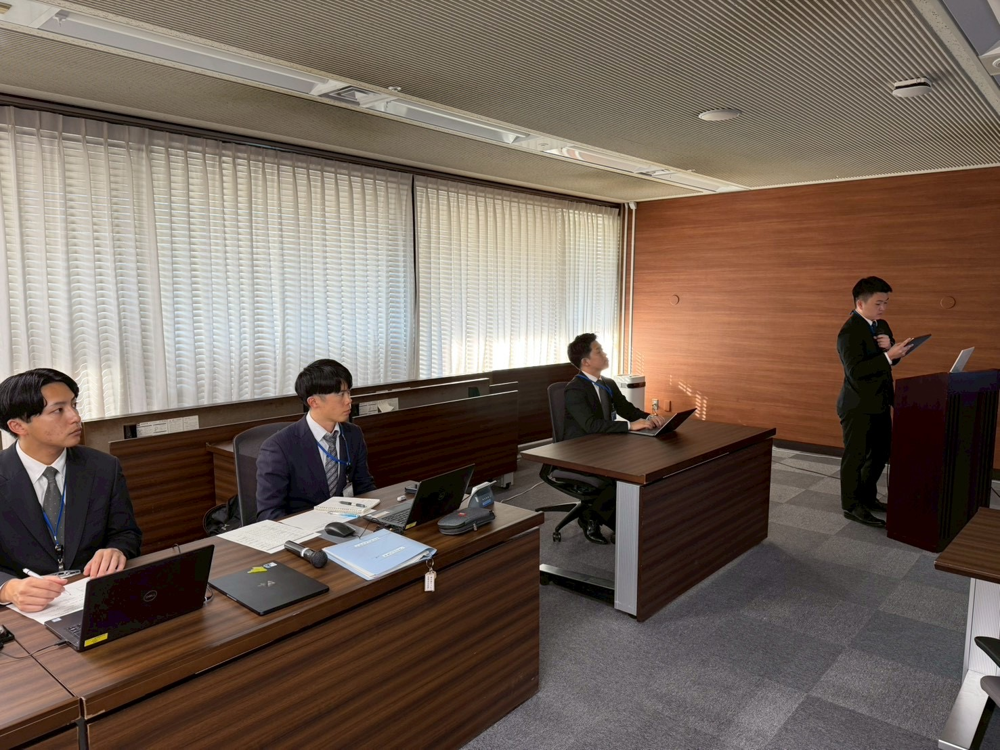
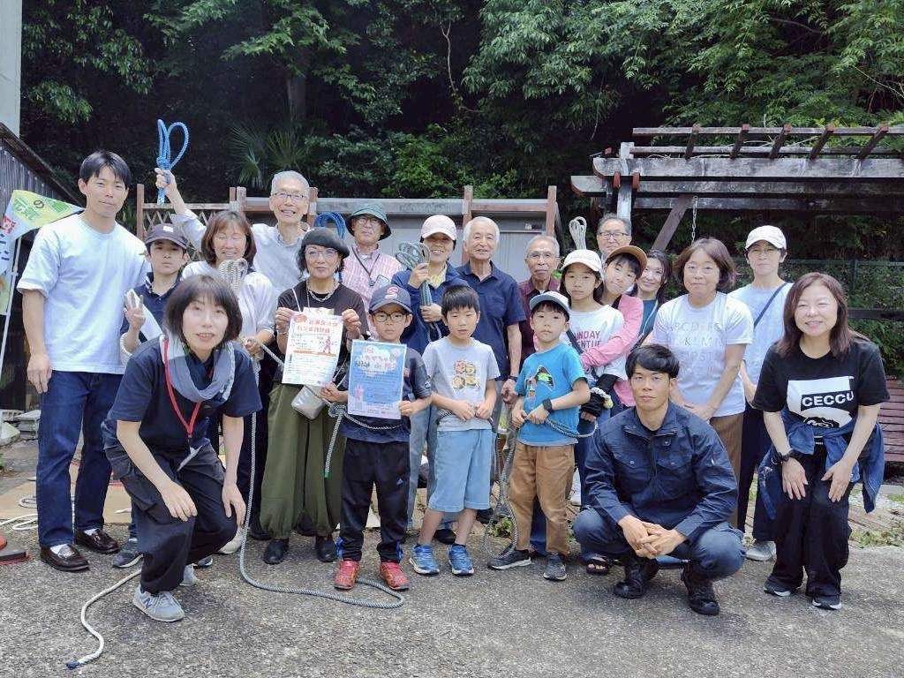
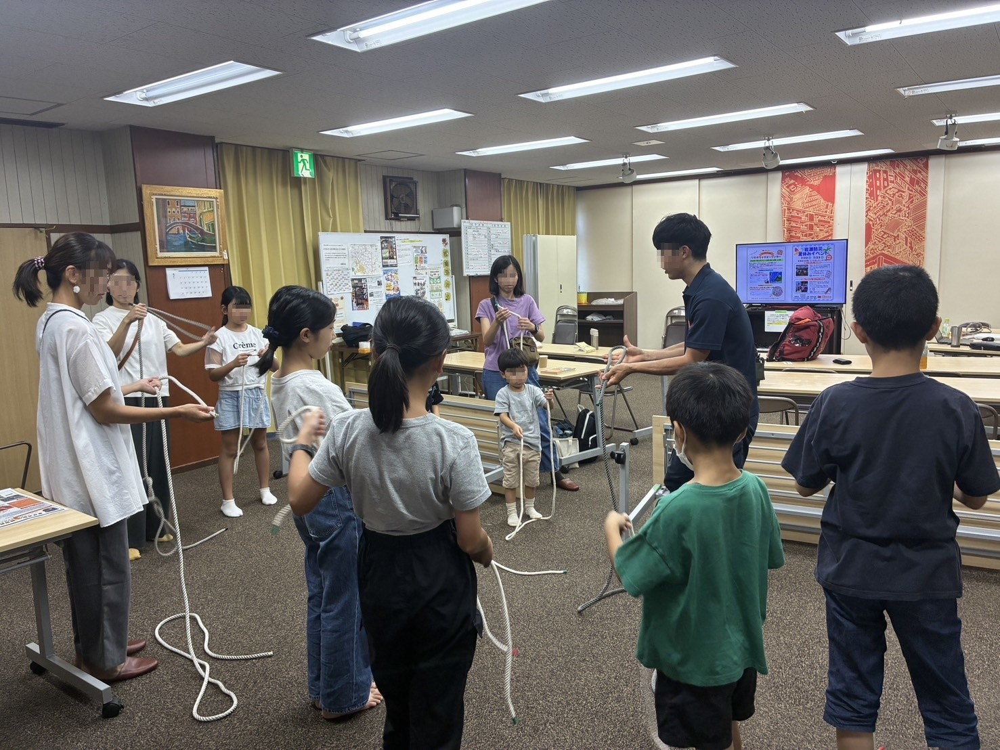
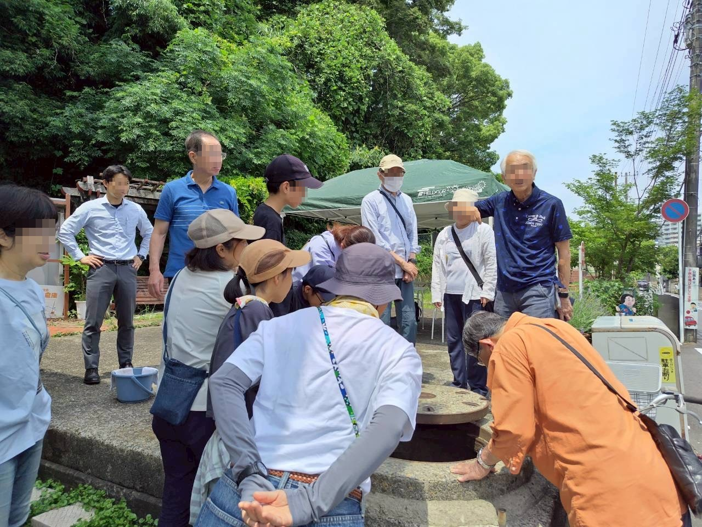
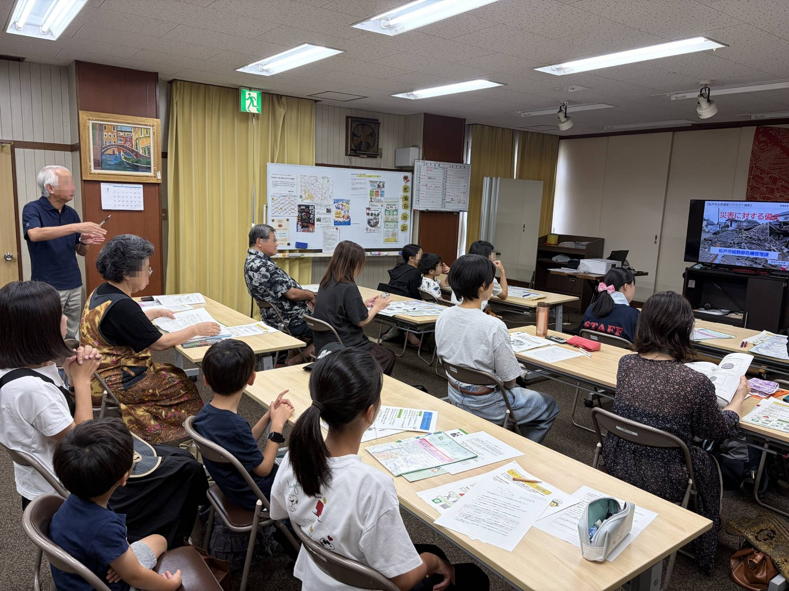

▶
災害は、待ってくれない
それなのに——
訓練は、毎年おなじ
シ
ン
防
災
訓
練
つくるのは、わたしたち
TAKAYA SUGIYAMA
杉山 貴哉
岩瀬自治会 防災担当
／
防災スキルラボ 代表


TAKAYA SUGIYAMA
杉山 貴哉
岩瀬自治会 防災担当
防災スキルラボ 代表
現役 消防職員
現場の多くをレスキュー隊として活動
東京大学
防災の研究
地域
岩瀬自治会・防災スキルラボ


現場
×
研究
×
地域
「
防災訓練
」と聞いて、
思い浮かぶのは？
避難訓練
消火器訓練
AED訓練
どれも大切
でも——
2024
避難訓練
消火器訓練
2025
避難訓練
応急救護訓練
2026
応急救護訓練
消火器訓練
毎年おなじ
……退屈
毎年、訓練は
開かれている
2022
参加するのは いつも
同じ顔ぶれ
参加しない人は、
ずっと参加しない
※イメージ図
変わらない
参加しない
効果が上がらない
そこで
新しいカタチ
の防災訓練を、
考えよう
岩瀬自治会の チャレンジ

ロープワーク
結ぶ技術は、守る技術

まち歩き
歩いて知る、わがまち

防災講座
毎月、テーマを変えて開催
より便利で実用性のある防災を進めるために
防災
DX
にも
取り組んでいます
防災スキルラボ 開発
BOSAI Palette
楽しみながら
＋
年代問わず
＋
気軽に
▼
イベント型防災
＝
大きな効果
防災 × 謎解き
防災運動会
炊き出しグルメ選手権
夜の停電体験
防災キャンプ
親子ロープワーク教室
防災スタンプラリー
ペットと避難体験
？
？
？
自由な発想で
「こんなのあったら
面白そう
」
「
やってみたい
」
※ たとえば…のアイデア例
いくつかのアイデアは
後日、実際にやります！
ぜひ皆さんで
シ
ン
防
災
訓
練
を、一緒に創りましょう
このあと、グループで話しませんか？
杉山 貴哉
岩瀬自治会 防災担当 ／ 防災スキルラボ 代表
クリックで開始
開始するまで、この画面で止まっています。キーで準備してからクリックしてください
F
全画面
H
経過タイマー・進行バー
C
右下のクリック合図
N
台本の字幕（リハーサル用）
A
自動送りモード
B
BGM（同じフォルダの bgm.mp3）
G
この案内を隠す／出す（炎だけの待機画面）
開始：クリック ／ → ／ Space ／ リモコンの「次へ」
開始後：← ・右クリックで戻る R ・ Home で最初から